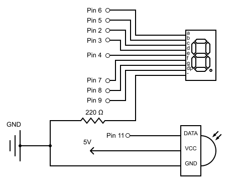
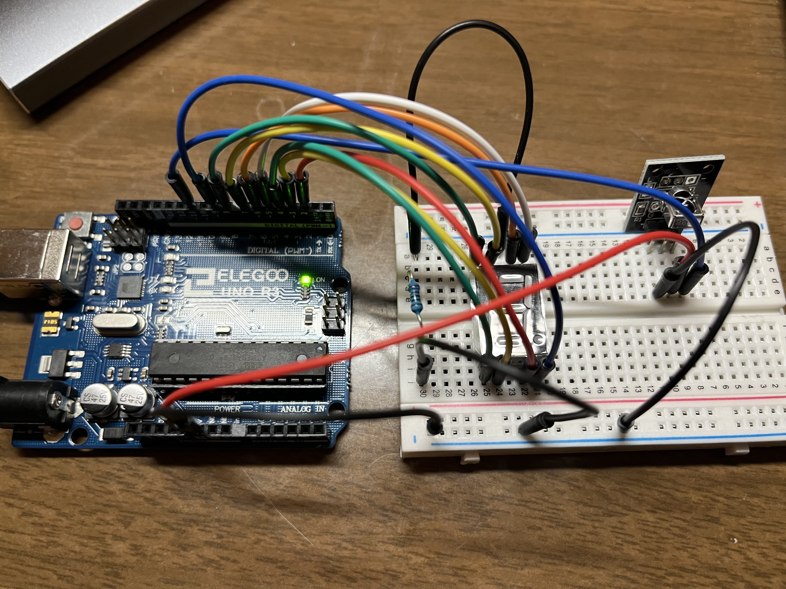

Overview
I have created a device that could display the number pressed on the remote control on the seven segment display. I have used two Libraries including IRremote library and the AdvancedSevenSegments Library. The input is the IR sensor and the controller, the output is the seven segment display.

Schematic
- I have first calculated the appropriate resistance for the seven segment display. According to the datasheet, the DC forward current for red LED is 15mA, the voltage drop is 3.0V. With these data, I have calculated the resistance value.
- Then with the value of resistor, I have drew the schematic for the circuit. 


Circuit
According to the schematic, I have built the circuit with Arduino on the breadboard.
Firmware
// include IR remote library:
#include
// include Advanced Seven Segment library:
#include
// setup advanced seven segment library by matching LEDs with pins:
AdvanceSevenSegment sevenSegment(6, 5, 2, 3, 4, 7, 8, 9);
// IR remote receive pin:
const int RECV_PIN = 11;
// create irrecv object with receive pin:
IRrecv irrecv(RECV_PIN);
// create results object from decode_results class:
decode_results results;
// create variable key_value with default 0:
unsigned long key_value = 0;
void setup() {
// initialize serial communication at 9600 bps:
Serial.begin(9600);
// Start IR receiver by calling the IRrecv member function enableIRIn()
irrecv.enableIRIn();
/* Blink the Arduino’s on board LED every time the receiver
gets a signal from the remote control, useful for debugging */
irrecv.blink13(true);
}
void loop() {
/* Function irrecv.decode will return true if a code is received
and the program will execute the code in the if statement */
if (irrecv.decode(&results)){
/* The received code is stored in results.value. If we receive
0XFFFFFFFF from the remote, it means a repetition of the previous key. */
if (results.value == 0XFFFFFFFF)
// Storing the result hex code in a global variable key_value:
results.value = key_value;
// Use a switch to handle each IR code:
switch(results.value){\
// In this case:
case 0xFFA25D:
// Print "POW" for Power in serial monitor
Serial.println("POW");
// Clear the number on severn segment display
sevenSegment.clean();
// Break this case:
break;
// In this case:
case 0xFF6897:
// Print "0" in serial monitor
Serial.println("0");
// Display 0 on seven segment display:
sevenSegment.setNumber(0);
// Break this case:
break ;
// In this case:
case 0xFF30CF:
// Print "1" in serial monitor
Serial.println("1");
// Display 1 on seven segment display:
sevenSegment.setNumber(1);
// Break this case:
break ;
// In this case:
case 0xFF18E7:
// Print "2" in serial monitor
Serial.println("2");
// Display 2 on seven segment display:
sevenSegment.setNumber(2);
// Break this case:
break ;
// In this case:
case 0xFF7A85:
// Print "3" in serial monitor
Serial.println("3");
// Display 3 on seven segment display:
sevenSegment.setNumber(3);
// Break this case:
break ;
// In this case:
case 0xFF10EF:
// Print "4" in serial monitor
Serial.println("4");
// Display 4 on seven segment display:
sevenSegment.setNumber(4);
// Break this case:
break ;
// In this case:
case 0xFF38C7:
// Print "5" in serial monitor
Serial.println("5");
// Display 5 on seven segment display:
sevenSegment.setNumber(5);
// Break this case:
break ;
// In this case:
case 0xFF5AA5:
// Print "6" in serial monitor
Serial.println("6");
// Display 6 on seven segment display:
sevenSegment.setNumber(6);
// Break this case:
break ;
// In this case:
case 0xFF42BD:
// Print "7" in serial monitor
Serial.println("7");
// Display 7 on seven segment display:
sevenSegment.setNumber(7);
// Break this case:
break ;
// In this case:
case 0xFF4AB5:
// Print "8" in serial monitor
Serial.println("8");
// Display 8 on seven segment display:
sevenSegment.setNumber(8);
// Break this case:
break ;
// In this case:
case 0xFF52AD:
// Print "9" in serial monitor
Serial.println("9");
// Display 9 on seven segment display:
sevenSegment.setNumber(9);
// Break this case:
break ;
}
// store key_value to results.value:
key_value = results.value;
// Call irrecv.resume() to reset the receiver and prepare it to receive the next code:
irrecv.resume();
}
}